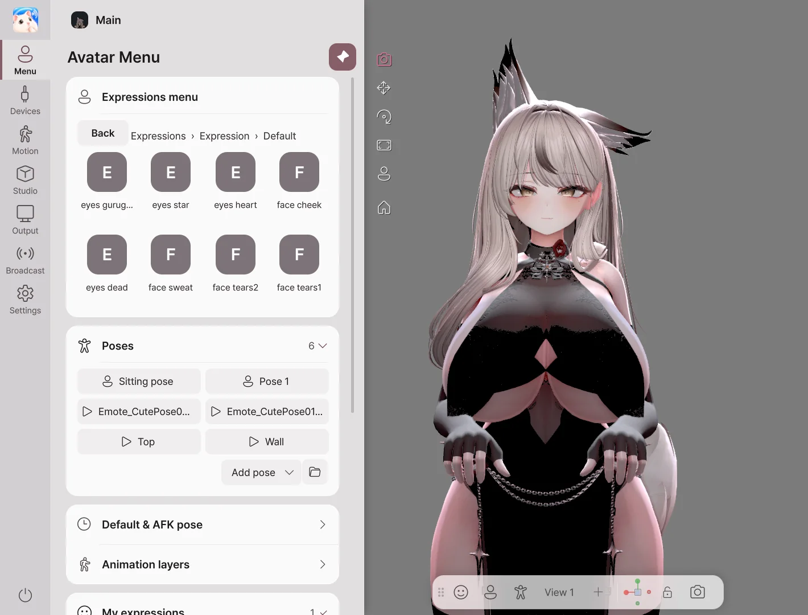

Getting Started
Start by loading an avatar, connecting your tracking devices, then setting up your broadcast video output.
Installing and Running
- Receive the Avatar Live ZIP file from your BOOTH purchase history.
- Extract all files to the desired folder.
- Run
AvatarLive.exeinside the folder. - On the product activation screen, enter the information provided when you made the purchase and press Activate.
Windows 10 / 11 64-bit and a graphics card that supports DirectX 11 are required. Prepare a webcam to track face and hand movements, and a microphone to move the mouth with your voice.
1. Open Avatar

- Click 'Open Avatar' or drag the file into the window.
- Select the character to use from the avatar list.
- Click Start in Avatar Live. When the scene list appears, select the scene you want to use.
| File type | How to use it |
|---|---|
.vavatar |
Open the file directly. |
.vrm |
Loads as is. Supports VRM 0.x and 1.0. |
| Unity Avatar Project | After creating a .vavatar with Avatar Exporter, import it. |
2. Connecting My Movements

- Press the device on the left.
- Select the camera you want to use from the webcam list and turn on the switch to the right of the title.
- Face the screen straight on and press front calibration.
- To move your mouth with your voice, also select a microphone and turn on the switch.
If you are using an iPhone or an external tracker, check Devices for connection methods.
3. Setting Background and Composition

- Outfit & expression: Choose from the left menu.
- Face & hand movements: Adjust in Motion.
- Background & lighting: Choose in Studio.
- Composition: Select face, upper body, or full body from the camera toolbar at the bottom.
Press F1 to hide the menu and view only the avatar. Press again to bring the menu back.
4. Connecting to Broadcasting Software
| Purpose | Where to Open |
|---|---|
| Insert avatar into OBS on this PC | Spout2 Connection |
| Send video to OBS on another PC | NDI Connection |
| Use as camera on Discord or Zoom | Virtual Camera |
| Share games and avatars together | Screen Sharing |
| Broadcast together with a friend's avatar | Remote Collaboration |
| Make the avatar react to viewer events | Broadcast integration |
Before starting a broadcast, check the actual video on OBS or the side receiving the shared screen. The layout of your work screen and the broadcast camera may differ.
Editions and Exit
Basic is for personal/private use, Pro is for broadcasting, video sharing, and commercial use. Check the features by edition for the functions you need.
Close the program with the power button at the bottom left. If the window's X button is set to hide to the tray, the broadcast will continue. You can change the X button behavior in Settings → Window.